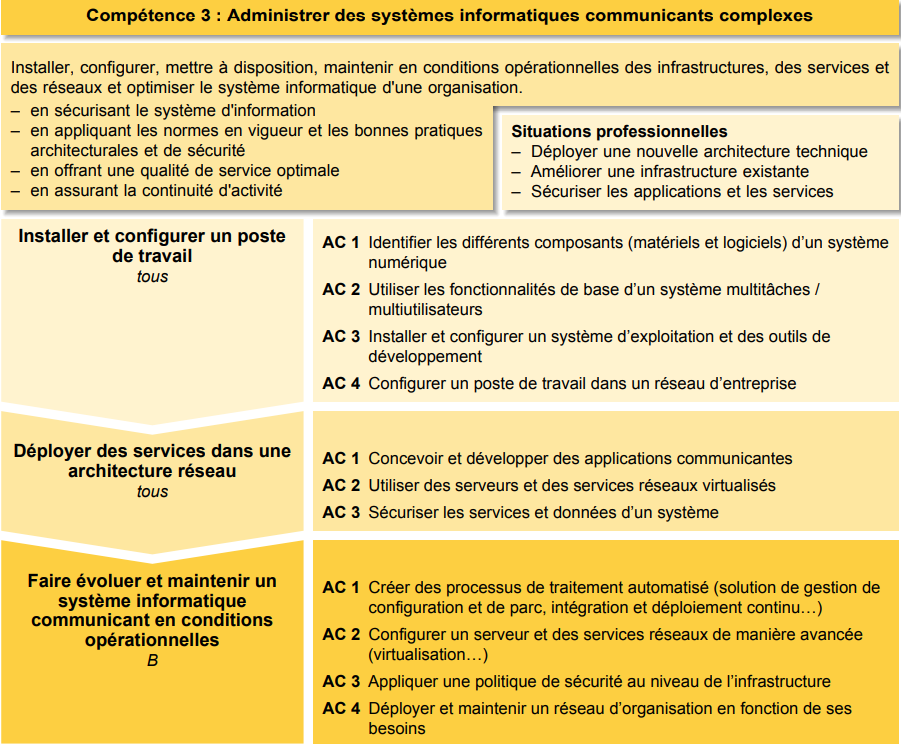

- Identifier les différents composants (matériels et logiciels) d'un système numérique - Utiliser les fonctionnalités de base d'un système multitâches / multiutilisateurs - Installer et configurer un système d'exploitation et des outils de développement - Configurer un poste de travail dans un réseau d'entreprise Liste des composantes essentielles :
Apprentissage critique de la Competence

Evaluation
| Ressource | R3 Intro. Archi. | R4 Intro. systèmes | R10 Anglais technique | R11 Bases de la comm |
| Coefficient | 21 | 21 | 12 | 6 |
SAE 3 Installation poste
En partant d'un besoin exprimé par un client, il faut identifier les outils les plus adaptés aux besoins, les installer, les configurer et créer une notice d'utilisation.
Ressources
R3
Introduction à l’architecture des ordinateurs
- Analyser un problème avec méthode (découpage
en éléments algorithmiques simples, structure de
données…)
-Identifier les différents composants (matériels et
logiciels) d'un système numérique
Descriptif détaillé
Objectif L'objectif de cette ressource est de découvrir la structure et les composants d'un ordinateur. Cette ressource permet de découvrir les différents composants matériels et logiciels internes qui constituent un ordinateur, de manière à appréhender le fonctionnement, mais aussi les limites de leur utilisation. Savoir de référence étudiés: – Architecture générale d'un ordinateur, histoire et évolution de l'informatique – Codage (codage des informations de base : nombres, caractères) – Arithmétique des traitements associés – Étude d'un ordinateur personnel (composants…) – Évolution des technologies et des systèmes – Les différents savoirs de référence pourront être approfondis
R4
Introduction aux systèmes d’exploitation et à leur fonctionnement
- Utiliser les fonctionnalités de base d'un système
multitâches / multiutilisateurs
- Installer et configurer un système d'exploitation et
des outils de développement
Descriptif détaillé
Objectif L'objectif de cette ressource est de comprendre le rôle, les composants et le fonctionnement d'un système d'exploitation. Cette ressource permet de découvrir les principes d'un système d'exploitation, leur mode de fonctionnement et les différents types existants. Elle contribue à comprendre comment installer un système sur une machine et à le personnaliser en développant des fonctions simples facilitant la configuration et le paramétrage. Savoir de référence étudiés – Caractéristiques et types de systèmes d'exploitations – Langage de commande (commandes de base, introduction à la programmation des scripts) – Gestion des processus (création, destruction, suivi…) – Gestion des fichiers (types, droits…) – Gestion des utilisateurs (caractéristiques, création, suppression…) – Principes de l'installation et de la configuration d'un système : notion de noyau, de pilotes, de fichiers de configuration, boot système… – Les différents savoirs de référence pourront être approfondis
R10
Anglais
- Faire des essais et évaluer leurs résultats en regard des
spécifications
-Développer des interfaces utilisateurs
Descriptif détaillé
Objectif L'objectif de cette ressource est d'introduire l'anglais de spécialité informatique et de développer sa culture générale et scientifique. Cette ressource permet l'acquisition du vocabulaire de base de l'informatique. Savoir de référence étudiés Vocabulaire de base de l'informatique et de la bureautique, Initiation aux techniques de présentation orale, Compréhension des ressources à l'écrit et à l'oral (par ex. : documentations, tutoriels, documents scientifiques d'actualité…), Les différents savoirs de référence pourront être approfondis
R11
Bases de la comm
Configurer un poste de travail dans un réseau d'entreprise
Descriptif détaillé
Objectif L'objectif de cette ressource est d'aborder les fondamentaux de la communication. Cette ressource permet une approche sur l'importance de bien communiquer face à un client, de formuler ses questions de manière claire et pertinente pour recueillir les besoins du client. Elle permet de développer l'esprit critique et la capacité d'analyse nécessaires à la collecte d'informations. Enfin, la ressource permet la mise en place et l'appropriation d'outils de communication pour restituer les informations (sous formes diverses du papier au web) à destination d'un client oud'une équipe Savoir de référence étudiés – Communication verbale et non verbale – Recherche documentaire, appropriation, réutilisation de l'information, prise de notes, analyse critique des sources – Développement d'une attitude critique – Recueil des besoins (méthode de collecte, d'enquête, d'interview) – Conception de documents de communication (sous divers formats dont numériques) – Les différents savoirs de référence pourront être approfondis